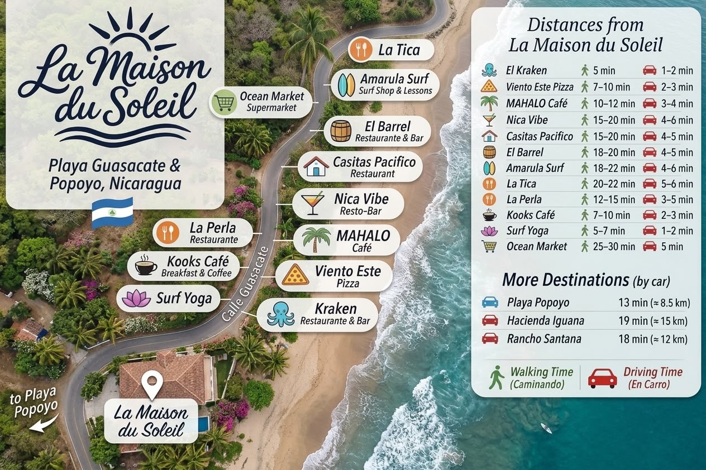

📖 Welcome Book / Guía de bienvenida
Información de la casa, reglas, Wi‑Fi, seguridad y contactos.
House information, rules, Wi‑Fi, safety and contacts.
🏡 Nuestra casa / Our home
Ver en Airbnb / View on Airbnb ↗📍 Ubicación de la casa / House location🗺️ Mapa de Guasacate / Guasacate Map
Mapa ilustrado de La Maison du Soleil con restaurantes y tiempos aproximados a pie y en carro. / Illustrated map with restaurants and estimated walking and driving times.

🔎 Ver mapa grande / View full map🍽️ Restaurantes de nuestro mapa
Restaurants on our map
Solo establecimientos que aparecen en el mapa aprobado. Los enlaces buscan cada nombre en Maps; verifica el resultado antes de salir.
Only venues from our approved map. Map links search by name; please confirm the result.
🔑 Llegada y salida / Check-in & out
Check-in: 12:00 p. m.
Check-out: antes de la 1:00 p. m. / before 1:00 p. m. (del día siguiente / the next day)
Para instrucciones detalladas y contactos, consulta el Welcome Book / See the Welcome Book for full instructions and contacts.